The aim of this project is to present the concept of Beacon based Routing, which is a way of traveling inside a polygon using structures called beacons. But what is this?
A beacon is a fixed point contained in a polygon which can induce a linear attraction to any other point in the polygon, similar to a gravitational or magnetic attraction. So a beacon can be activated, i.e. it starts producing this attraction, or deactivated, losing this capacity. And how would a normal point behave when attracted by a beacon’s pull? It will move linearly towards the beacon. If it gets blocked by an edge of the polygon, then it will move across the edge in the direction which minimizes the distance between the point and the beacon. When a point p is able to reach a beacon b without getting stuck in the process, we say that b attracts p. Due to edges’ intrusion, our point may not be able to eventually reach the beacon, getting stuck in some other point called dead point. Why can this happen? Our point may be not able to decide what path to take when it reaches an edge if the distance to the beacon does not decreases in any direction, as seen in the next figure, where the red point tries to reach the yellow beacon:
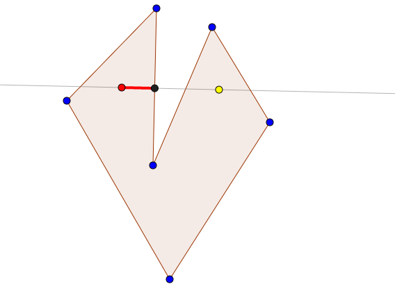
Or it may take a direction along the edge which “seems” more promising but at the end it makes you get stuck in a different part of the polygon, as seen here:
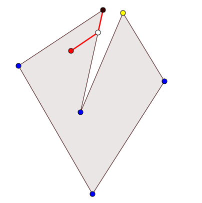
How is routing done using beacons then? We will say that a point A can be routed to another point B if there is a sequence of beacons that can be activated in a determinate order and one at a time such that A is able to reach B by travelling through the beacons. The point B will have to be activated in the end so that A eventually reaches B but it will not be considered as a beacon itself when counting the sequence. In addition, each beacon could be activated only once.
Another important concept related to beacons is coverage. A polygon will be covered by a set of beacons if any point of the polygon is attracted by at least one beacon in the chosen set.
Routing
Routing in Simple Polygons
We first have a very important result we will use many times in the following theorems.
It is the simplest case, but, as in many cases in mathematics, it provides a strong 'block' to be able to build the next results easily.
The theorem has two parts, the second one being the most significant.
1. Given a simple polygon P, \(\left\lfloor \frac{n}{2}\right\rfloor -1\) beacons are sometimes necessary to route between any pair of points in P.
Proof
It is sufficient to provide an example of a simple polygon in which we would need \(\left\lfloor \frac{n}{2}\right\rfloor -1\) beacons to route between
any pair of points in P, focusing on an extreme pair.
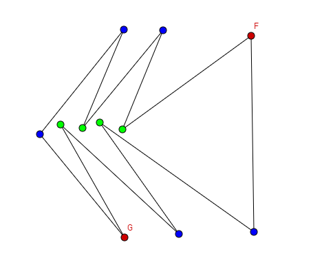
Figure 0.
In figure 1, we can see a simple polygon of 11 vertices. If we look at points G and F, to be able to take G to F’s position we will have
to place 4 beacons in the green vertices. This is caused by the fact that G will tend to get stuck in every spike during its journey to F,
so we must place one beacon per spike, 4 in total (\(\left\lfloor \frac{11}{2}\right\rfloor -1=5-1=4\)).
2. Given a simple polygon P, \(\left\lfloor \frac{n}{2}\right\rfloor -1\) beacons are always sufficient to route between any pair of points in P.
Proof
We will present an algorithm to place \(\left\lfloor \frac{n}{2}\right\rfloor -1\) beacons in any simple polygon in such a way we can route between any pair of points in it.
Firstly, we will triangulate the polygon. Considering this triangulation, we will peel off triangles starting with an extreme triangle
(lowest leaf of the dual graph associated to that triangulation) in each iteration. These removed triangles will mean “routed territory”, that
is to say, a part of the polygon in which we can route between any pair of points with the beacons already placed.
There will be two types of extremes triangles a = ABC, as shown below:
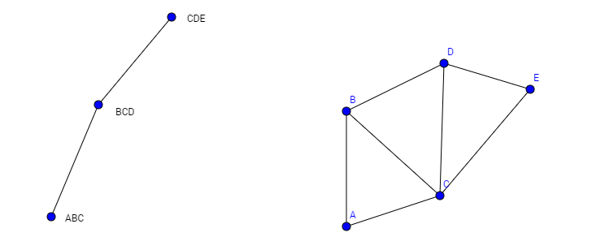
Figure 1: ABC is a single leaf, as BCD has no more children. The rest of P is located via CDE.
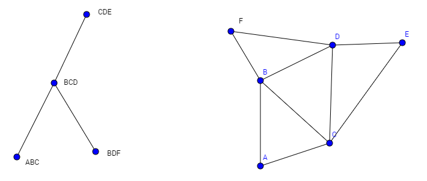
Figure 2: BCD has two children, ABC and BDF. The rest of P is located via CDE as before.
How are we going to place the beacons in our peeling off?
In the case of figure 1, we will put a beacon Z in C. This way, any point in the three triangles can navigate to Z if attracted by it and vice versa.
We note it will be analogous if we had a hypothetic BDE instead of CDE.
The second case is a bit more complicated, as we have to consider 4 triangles instead of 3. Here we will use something stronger than attraction, visibility,
which will be useful afterwards. Then we cannot put Z in C, as F may be to the left of line BC. But, considering the point B, we will be able to see triangles
ABC and BDF from it. Therefore we could put a beacon Z in B and we would have visibility over every triangle shown in the figure except DCE, but this will not
affect the future proof. All in all, every point before segment CD will be visible to Z and therefore every point could be routed to or from Z. (*)
Now, how does the algorithm work?
Recursively, we will choose an extreme triangle and we will place a beacon Z as described above. Then we will peel off some triangles depending on the case.
Here we must define the base cases and the inductive step.
If P is a single triangle or two triangles, we do nothing.
If our chosen triangle is in case 1 (figure 3), we will place the beacon as seen above. This beacon will make possible routing between any pair of
points in the triangles. In this case, we peel off ABC (a1) and BCD (a2), getting a new simple polygon P’. We know we can route between any pair of points
contained in the peeled part and also contained in P’ by induction hypothesis. So we just need to check if we can navigate from a point t in (a1 u a2) to a
point s in P', therefore P would be “beaconizable”. But we can do this easily by first routing from t to Z and then from Z to s by induction hypothesis.
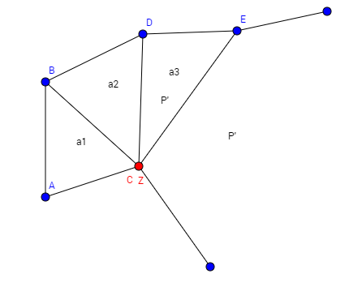
Figure 3.
If our chosen triangle is in case 2 (figure 4), we will place the beacon as seen above. Now we peel off ABC (a1) and BDF (a4), getting a simple P’.
Now our separation lines will be BC and BD. We know we can navigate without problems within triangles a1 and a4 separately, and within P’ by induction.
What happens in this case if we want to route between a point t in the peeled part and a point s in P’? We can route from t to Z and then from Z to s by
induction hypothesis, with s being situated either in a1 or a4. The last case to consider would be having t and s in a1 and a4 respectively, and we could
obviously route from one to another just using Z.
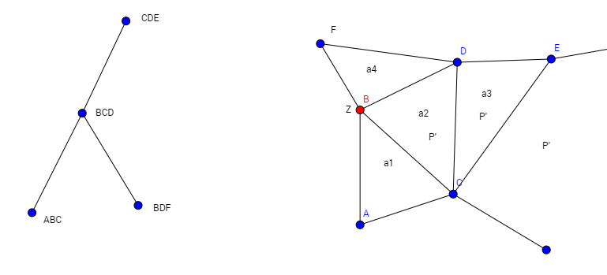
Figure 4.
So using this algorithm we see that we remove two triangles each time we place a new beacon. As the number of triangles in the triangulation is n – 2,
with n being the number of vertices, the total number of beacons placed will be at most \(\left\lfloor \frac{n-2}{2}\right\rfloor\), which is the same as \(\left\lfloor \frac{n}{2}\right\rfloor -1\).
Routing in Polygons with Holes
Now we will take a look at polygons with n vertices and h holes.
3. Given a polygon P with n vertices and h holes, \(\left\lfloor \frac{n}{2}\right\rfloor -h-1\) beacons are sometimes necessary to route between a pair of points in P.
Proof
We already know this is clear for \(h=0\). Now, how can we build an example with holes fulfilling this bound? We could use the valid example of figure 0 and
try to adapt it with holes. The important concept in that examples were the spikes, so couldn’t we add more spikes thanks to the holes? We could build holes like
in figure 5, seen in green:
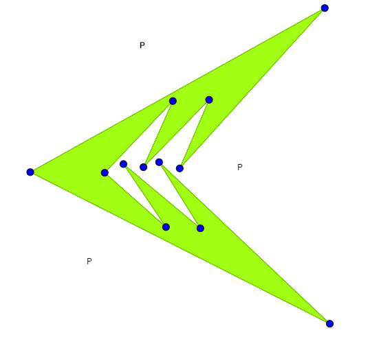
Figure 5.
Then we would need many beacons to get a point s out of the deepest spike of the polygon, 4 in this concrete case. So we will use this idea combined with a polygon
of this very form itself as in figure 0, with 1 hole as seen in figure 6:
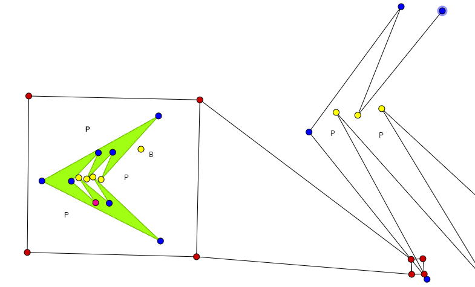
Figure 6.
In this example, we can see that we have 1 hole, the main polygon has 11 vertices and the hole part has 12 vertices (11 plus 1 to close it).
Thus we have 23 vertices.
In order to take the red point to what in figure 0 was \(F\), we must first leave the spikes of the hole an then the main spikes. We will need 4 beacons to dodge the main
spikes as seen in figure 0, plus 4 for the hole spikes (same reasoning). But we have to add another one, \(B\) in figure 6, to be able to finally leave the hole when the
first of the main spike beacons gets activated. So we will need 9 beacons in total and we have that \(\left\lfloor \frac{23}{2}\right\rfloor -1-1=11-2=9\).
We have presented a successful example with 1 hole, and we could repeat this method recursively to generalize this situation to \(h\) holes.
4. Given a polygon \(P\) with n vertices and \(h\) holes, \(\left\lfloor \frac{n}{2}\right\rfloor +h-1\) beacons are always sufficient to route between a pair of points in \(P\).
Proof
As in the theorem for simple polygons, we first triangulate the polygon and consider the dual graph of the triangulation. This dual graph, as \(P\) is not
simple, may have cycles, as seen in figure 7:
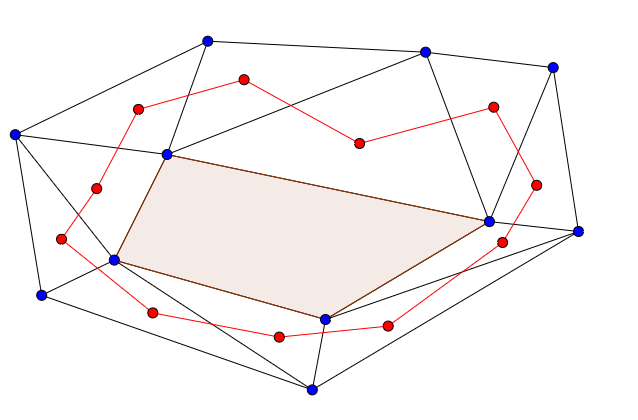
Figure 7.
What we will do know is to get rid of these cycles by removing an edge of each cycle: we add two vertices very close to those of the edge, hence creating a very thin artificial channel in order to remove the hole (figure 8).
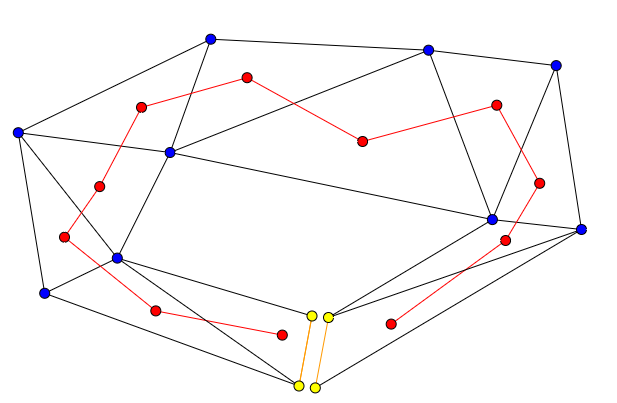
Figure 8.
When we do this we get a connected graph without cycles, and we have to do it h times, adding \(2h\) vertices and getting a simple polygon of \(2h+n\) vertices.
Now we can use the result of theorem 2, because the position of the new vertices does not affect routing in any way (as they are as close as we want to the old
vertices). Thus we have that it can be routed with \(\left\lfloor \frac{2h+n}{2}\right\rfloor -1=\left\lfloor \frac{n}{2}\right\rfloor +h-1\) beacons.
Routing in Simple Orthogonal Polygons
Here we will just present a better bound to the necessary number of beacons to route between two points in a simple orthogonal polygon. We note that theorems 1
and 2 are applicable to this kind of polygons.
4. Given a polygon P with n vertices and h holes, int( n/2 ) + h - 1 beacons are always sufficient to route between a pair of points in P.
Proof
As always, we will give an example to prove that there exists a polygon with those characteristics fulfilling the statement.
In this case, we have a very simple, orthogonal polygon with 12 vertices and needing just int(12/4) – 1 = 3 – 1 = 2 beacons to route, looking at two extreme points
C and K:
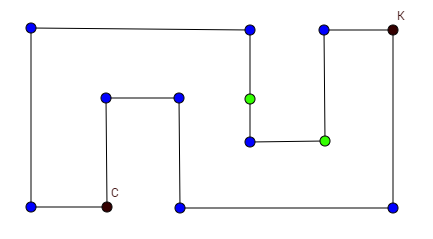
Figure 9.
(*) Mistake found in the article Combinatorics of Beacon-Based Routing and Coverage
In this article, which is the fundamental basis of this section, the algorithm depicted to build the proof for theorem 2 has a flaw.
In the case 2 of these algorithm, the beacon Z is placed somewhere in the segment CD, in order to be able to peel off three triangles instead of two,
because “there always exists a point in the segment CD from which we will be able to see the entire pentagon ACDFB”. But this is not true as the next figure shows:
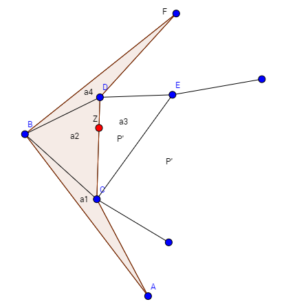
This flaw does not seem to be easily solved if we want to peel off these three triangles, but it certainly could be avoided by just peeling two triangles as we did
in our proof in this section, which does not affect the result of the theorem.
Coverage
What does coverage of a polygon mean? A polygon is covered by a set of beacons if every point of the polygon is attracted by at least one of the beacons.
We note that this is a different condition to routing, although these two concepts are related. Routing is a strongest condition, so every routed polygon is also
covered, but we do not have the opposite implication. Therefore, we will need fewer points to cover, generally, than when we routed.
We will remember two important simple concepts that will be very useful in this section. The attraction region and the inverse attraction region.
The attraction region of a point A is the set of points in P that are attracted by A (they are able to reach A when this point is activated as a beacon).
Inversely, the inverse attraction region of a point B is the set of points in P that can attract B when they are activated as beacons.
Now we can define the coverage saying that a polygon P is covered by a set of beacons if and only if P is contained in the union of the attraction regions of the beacons in the set.
‘Sometimes Necessary’ Bound
First, we will focus on giving a lower bound on the number of beacons sometimes necessary to cover arbitrarily large polygons.
3. Given a simple polygon P with n vertices, we may need arbitrarily close to int( 4n/13 ) beacons to cover P.
Proof
In order to prove this, we will present a specifically designed example on which we will have to use “many” beacons to cover. Again, as we did in routing too, the concept of spike will be proved very useful and we will use it intensively, as spikes prevent the points to reach the activated beacons due to the longer path they have to travel.
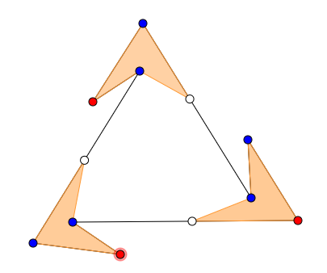
Figure 10.
In figure 10 we can see that the inverse attraction regions of the vertex in red (shadowed) are disjoint, so we will at least 3 beacons to cover it (one in each zone). We will need 3 beacons for a polygon of 9 vertices.
Now we will try to extend this example to make a family of polygons with n vertices.
Due to the angles of the spikes, it is not easy to replicate more spikes and extend the polygon in a suitable way to n. What we will do is to combine the spikes recursively to form a fractal polygon complex enough to give us the desired bound.
We will now define the concepts of “angled –in” polygon and “angled-out” polygon. An angled-in spike polygon would have the “main” shape of Figure 10, and want we will do is to combine two of these polygons to create an angled out polygon as depicted in the figure 11:
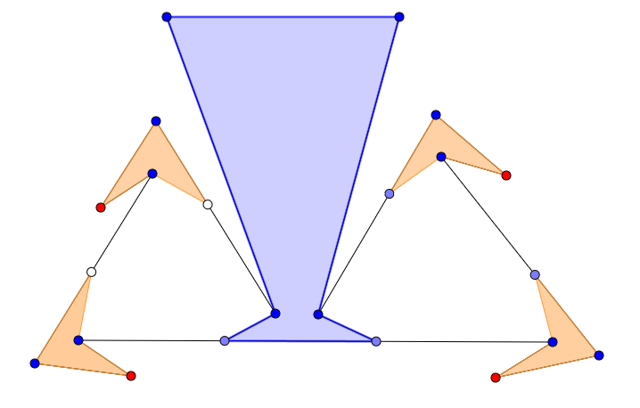
Figure 11.
We can see that we have removed one spike of each angled-in polygon in order to “glue” them, forming an angled-out polygon. How do continue with the recursion? It is very important to note that the blue shaded part of the above polygon will be a spike of another angled-in polygon, therefore completing the recursion, as seen in figure 12:
Figure 12.
So we build our family of polygons like this. In the next iteration, we would remove the white spike of figure 12 and with two copies of the angled-in polygon we would create another angled-out polygon, and so on.
Now we have to count the vertices and the independent points we have in the family. What is an independent point? The red points seen in the figures which make us put beacons next to them.
If we start with an angled-in polygon with n vertices and we follow the process seen above to create another bigger angled-in polygon, how many vertices will this new polygon have? We will start with a polygon with one more vertex in order to simplify the counting:
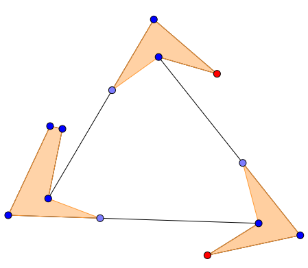
Figure 13.
First we remove one spike, n-2. Then we double the vertices with two copies and merge one edge eliminating two vertex, but we add two to create the angled-out spike as in figure 11, 2n-6+2 = 2n-4. Then we double the vertices again, 4n-8, finally we add four vertices to create the final spike, 4n-4.
What is the number of independent points? If we start with b independent points in an angled-in polygon, first we delete one when removing one spike, then we make two copies, 2b-2. For each two copies, we have an angled-out spike which will give us another independent point, 2b-1. Then, in the final step creating the bigger angled-in polygon, we double the independent points and we finally add another one due to the las spike we add, so in total 4b-1.
Using this information, we know define T(k) as the number of vertices in the family of polygons after k iterations. For example, T(0) would be 10 as seen in figure 13. Now we know that we have:
T(k)=4T(k-1)-4
By easily solving this recursion we have:
T(k)= 1/3 ( 26∙ 4^k+4 )
Similarly, we know define I(k) as the number of independent points in the family of polygons after k iterations. For example, I(0) would be 3 as seen in figure 13. Now we know that we have:
I(k)=4I(k-1)-1
By easily solving this recursion we have:
I(k)= 1/3 ( 8∙ 4^k+1 )
Here we are finally in a good position to end our proof and give a family of polygons with n vertices that will need asymptotically int( 4n/13 ) beacons to cover. This is caused because we have:
lim┬(k→∞)〖(1/3 ( 8∙ 4^k+1 ))/(1/3 ( 26∙ 4^k+4 ))〗= 4/13
So we will just consider our family of polygons and we have the result.
‘Always Sufficient’ Bound
We now take a look at the number of beacons that will be sufficient to cover a polygon P with n vertices and h holes in any case.
As seen at the beginning of this section, due to the relation existing between routing and coverage, the bound found here should be lower than that we reached in routing, which was int( n/2 ) + h – 1.
4. Given a polygon P with n vertices and h holes, int( (n+h)/3 ) beacons are always sufficient to cover P.
Proof
This proof, contrarily to the last one we saw, is far simpler and it is based in the art gallery problem. The art gallery problem indeed solves our problem, since art gallery’s is included in ours, because every guarding of a polygon is also a coverage of the polygon (every point is seen by a guard, so every point would be attracted to this guard without any problem).
The standard solution of the art gallery problem tell us that we can guard a polygon with n vertices and h holes with int( (n+h)/3 ) guards. So we can cover the polygon with int( (n+h)/3 ) beacons.
Coverage in Orthogonql Polygons
Orthogonal polygons are a special kind of polygons, and we can use these special characteristics to get better bounds on coverage.
For example, we know that in the case of orthogonal polygons, the art gallery problem gives us a better bound than int( (n+h)/3 ), int( (n+h)/4 ). So we have that int( (n+h)/4 ) beacons are always sufficient to cover a polygon P with these characteristics.
For the sometimes necessary beacons to cover an orthogonal polygon, we can use the same example we used in “Routing in Orthogonal Polygons”:
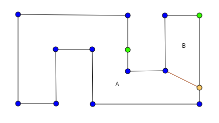
Figure 14.
The orthogonal polygon, P, has 12 vertices and just needs 2 beacons to cover, as seen in figure 14. P is divided into parts A and B by the brown line. The first beacon in green attracts every point in part A in the polygon, as the second attracts very point in part B.
This family can be extended (adding 4 vertices each time) and we will have a ‘serpent’ family of orthogonal polygons which require int( (n+4)/8 ) beacons to cover.
Implementation of the Algorithm
Sufficient Beacons
How is the algorithm of Theorem 2 really implemented? It is written in Javascript and using the P5 library. We will use a DCEL in order to keep track of the polygons.
First, we will introduce the simple polygon in clock-wise order and we will press enter. We will keep the vertices in order in a global array. When the polygon has been introduced in its entirety, we initialize the DCEL, setting an inner face and an outer face.
After this, we triangulate the polygon. We have implemented the triangulation using the ear clipping method, i.e. first finding an ear (by traveling through the vertices except the last one because of the Two Ears Problem) and then removing it recursively. During the algorithm, we update the DCEL accordingly.
When we have finished the triangulation, we now can start with the algorithm of theorem 2, but first we make a copy of the DCEL in order not to lose its information when modifying its structure during the upcoming algorithm. We will manage to do everything just using the DCEL.
We have two base cases and then the main step. Base case 1 consist in having just a triangle (2 faces) and we put the beacon in the first vertex. Base case 2 consist in having 2 triangles (3 faces) and we choose to put the beacon in the middle edge, because of the visibility. We are able to do this because we use a function which tell us the number of edges of a given vertex.
Eventually, we have the heart of the algorithm in the main case. We travel the vertices in order to find what will be a leaf in the dual graph, i.e. a vertex with only two edges. When we are there, we identify the vertex’ opposite edge in the triangle. Now we will distinguish between four cases. If we are in one of these cases it will mean that this triangle is effectively a lowest leaf. Testing this is done in constant time, so the algorithm will not slow down excessively.
The first one corresponds to case 1 in the theorem with what will be P’ to the left. We know if we are in this situation by examining the face of the suitable (half)edge and checking in it “faces” the outer face:
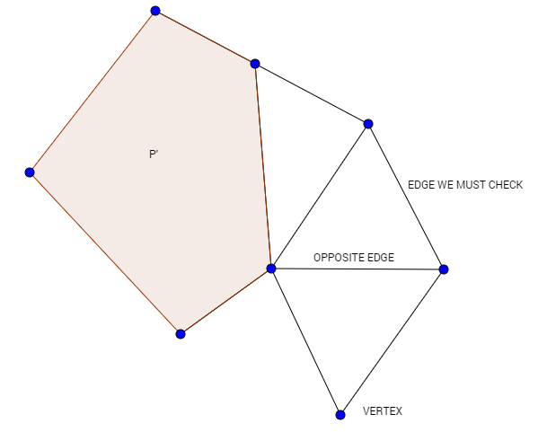
If we have this situation, then we know it is a lowest leaf. Then we check if the point where the beacon will be placed has already another previous beacon, if not, we save the new beacon in a global array of beacons. Finally, we delete first the triangle of the vertex and then the triangle containing the edge we check by using a function that deletes “leaf” triangles from the DCEL and we call the algorithm function recursively with this new DCEL.
The second case is analogous to the first one but with P’ to the right.
The third one corresponds to case 2 in the theorem with what will be P’ to the left. In order to check this we will look at two suitable edges as depicted in the next figure:
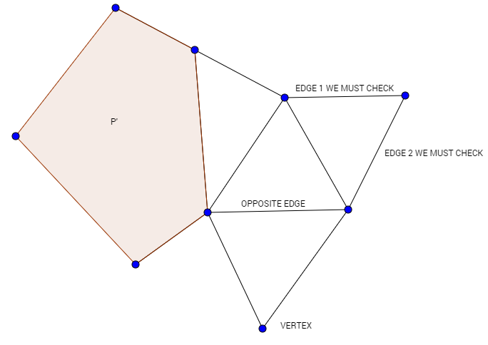
If both (half)edges “face” the outer face, we know that we are in this situation, and it will be a lowest leaf. We put the beacon in its place after checking repetition and then we remove the two adequate triangles from the DCEL (the vertex triangle and the triangle containing the edges we checked). As done before, we call the algorithm function recursively with the new DCEL.
The fourth case is again analogous to the third one but with P’ to the right.
If we are not in any of these cases, we then know the vertex’ triangle is not a lowest leaf, so we do nothing and just continue the search. We know for sure we will eventually find a lowest leaf.
Beacons to Route
At the same time we perform the calculations to obtain the sufficient beacons from theorem 2, we will also try to select, given two points inside the polygon, an ordered subset of beacons that we could use to route between then. This subset will be contained in the set of beacons from theorem 2.
Firstly, we will get the faces (triangles) both points are located in. Then we will perform some actions, guided by the previous algorithm. We will start and continue with the algorithm until we peel off a triangle that contains one of the points. Then that will mean we have started our path in this direction. We will keep two lists with beacons, with the beacons we have already visited in each direction, as each list of beacons is moving towards the other until they finally meet.
So how do we update the lists? The first beacons of the two lists are those two related to the peeling off of the faces containing the first and the second point, respectively. When we have to peel off two new triangles, we check if any of them is “influenced” by the beacons of a list, more precisely, the last beacon of the list as it is the one which leads the way. What means “influenced”? In this case, touching, i.e. the last beacon of the list is telling us we must take this path. We will keep adding beacons to the lists if the last beacon tell us to, until we eventually crossed paths:
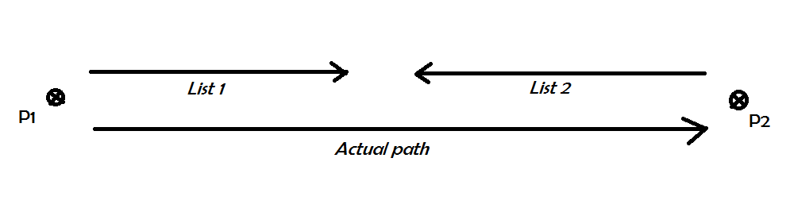
In order to detect when we have “merged” the lists, which is something we know will happen, we will check, for example if we are adding the current beacon to the list 1 (i.e. we are heading towards P2), whether the two triangles we are peeling off are “influenced” by the beacon from the other list, list 2 in the case. If so, this would be the next beacon we would have to add, therefore we have already finished because we have found all the beacons in the path. Once we have found all the beacons required to route, this algorithm has finished.
Finally, we have to arrange the two lists and join them in succession to build the actual path of beacons between the two points. We are done!
Applet
An applet has been implemented to illustrate the Sufficient Beacons algorithm. Click on the button below to use it. Instructions are included in the destination page.
M. Biro, J. Gao, J. Iwerks, I. Kostitsyna, and J. S. B. Mitchell. Combinatorics of beacon-based routing and coverage. Proc. the 25th Canadian Conf. Comput. Geom. (CCCG 2013), 2013.
Algorithm
Emo Welzl. Lecture notes. Chapter 5: Plane Graphs and the DCEL. 2012
Stefan Langerman. Lecture notes. Triangles and polygon triangulation. (Ear clipping method). Academic year 2015-2016.
Two Ears Theorem. 2016. Wikipedia. https://en.wikipedia.org/wiki/Two_ears_theorem
In this page we will look at how beacons interact with objects placed in a polygon. We will define relevant regions in a polygon, with respect to one or more beacons and interacting objects, namely the Attraction Region of a beacon and the Inverse Attraction Region of a point , and we will look at their key properties. We will also see how to compute those regions, then we will give algorithms that exploit the knowledge of them to route an object starting at a position until a final point .
The content of this page is re-elaborated from [4] and [3].
In Section 2↓ we describe the generic setting that we consider throughout the page and give basic definitions; in Section 3↓ we define the Attraction Region of a beacon and give its properties and algorithms to compute it; in Section 4↓ we discuss the Inverse Attraction Region of a point, following an outline that is similar to that of the previous section; Section 5↓ presents two algorithms that route an object from a point to a point . One requires a set of candidate intermediate beacons, the other is a polynomial-time approximation of the optimal routing path. Finally, in Section 6↓, we provide the link to an applet that allows to experiment with the concepts described in this page.
All the terminology and mathematical statements in this Section are taken from [3] and [4].
We consider a polygon, not self-intersecting, possibly with holes, whose boundary edges are oriented counterclockwise (the edges of a hole are instead oriented clockwise). A beacon is a point in the interior of that can be activated to exercise a ’magnetic pull’ on an object initially placed at a point .
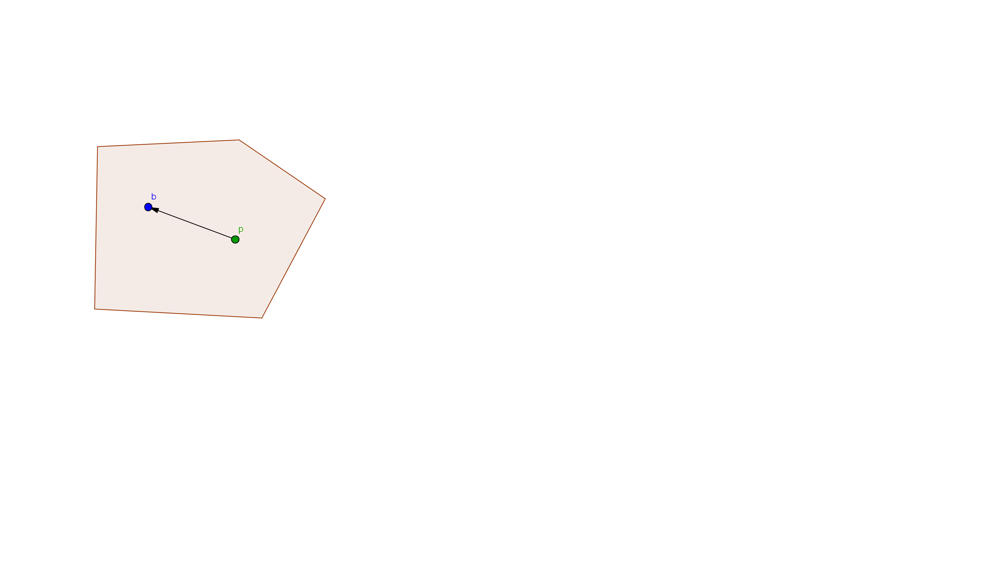
Figure 1 A beacon excercises a ’magnetic pull’ on a point .
When is active, the object decreases its Euclidean distance from greedily, following a straight line towards until it reaches either or . In the second case, it slides along , provided that its distance from decreases monotonically. When the object is no more constrained by , it moves again in a straight line. Thus, a generic route from a point to a beacon alternates between these described modes.
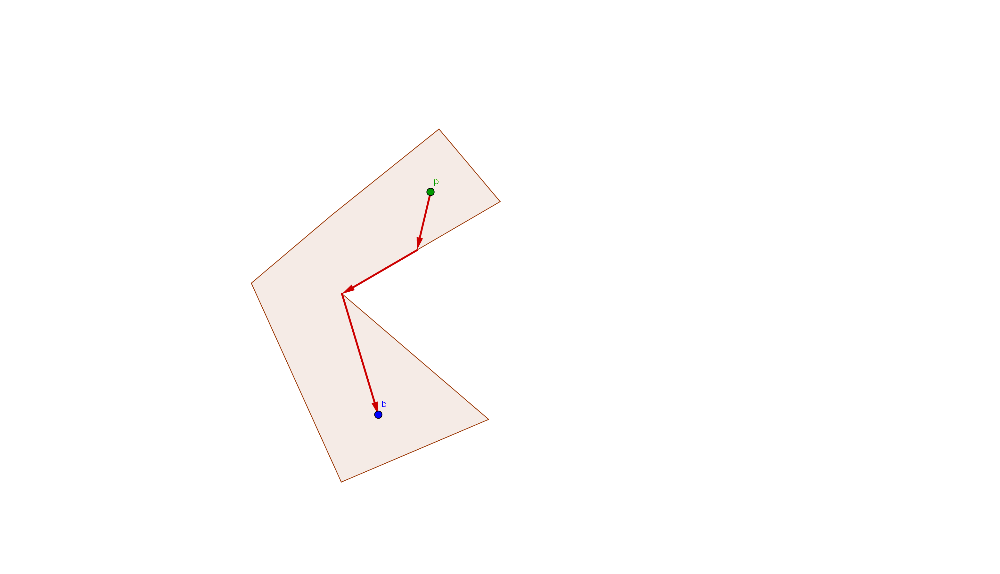
Figure 2 An object starting at moves unconstrained
unless it meets , then it slides along it.
If the object reaches a point in which the distance from cannot decrease that is different from, we say the object is stuck. The reached point is called a dead point on for beacon . The set of dead points for is referred to as . If an object starting at is able to reach , we say that attracts (is attracted to).
When routing an object from a starting point to a destination , we use a set of beacon points, which we activate in sequence: only one beacon at a time is active, and it remains active until it is reached by the object. At that point the next beacon is activated and the old one is simultaneously deactivated. We say that and are routed if we can find a set of beacon points that, when activated in the right sequence, can route an object from to . See Figure 3↓ for an example.
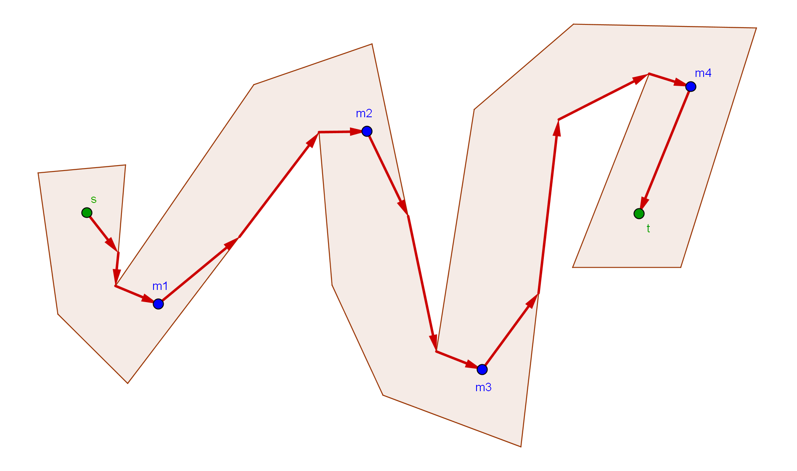
Figure 3 and are routed.
Given a dead point and a beacon , we call the dead region of with respect to , which we define as the set of points that will eventually get stuck at under the influence of . There are two types of dead points: vertex dead points and edge dead points.
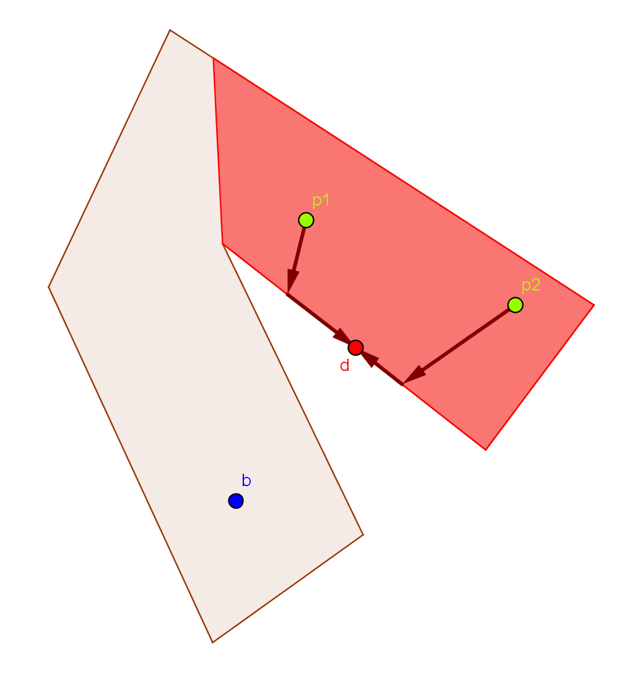
(a) The dead region of is shown in red.
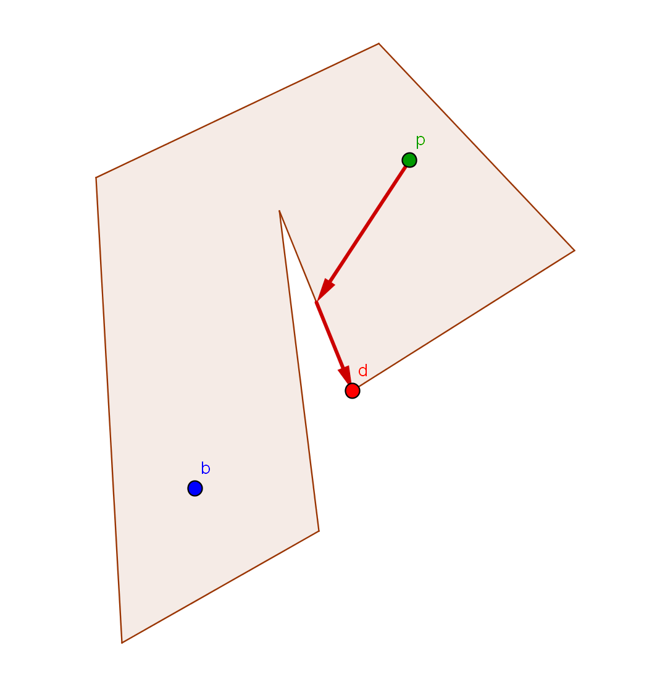
(b) is a vertex dead point.
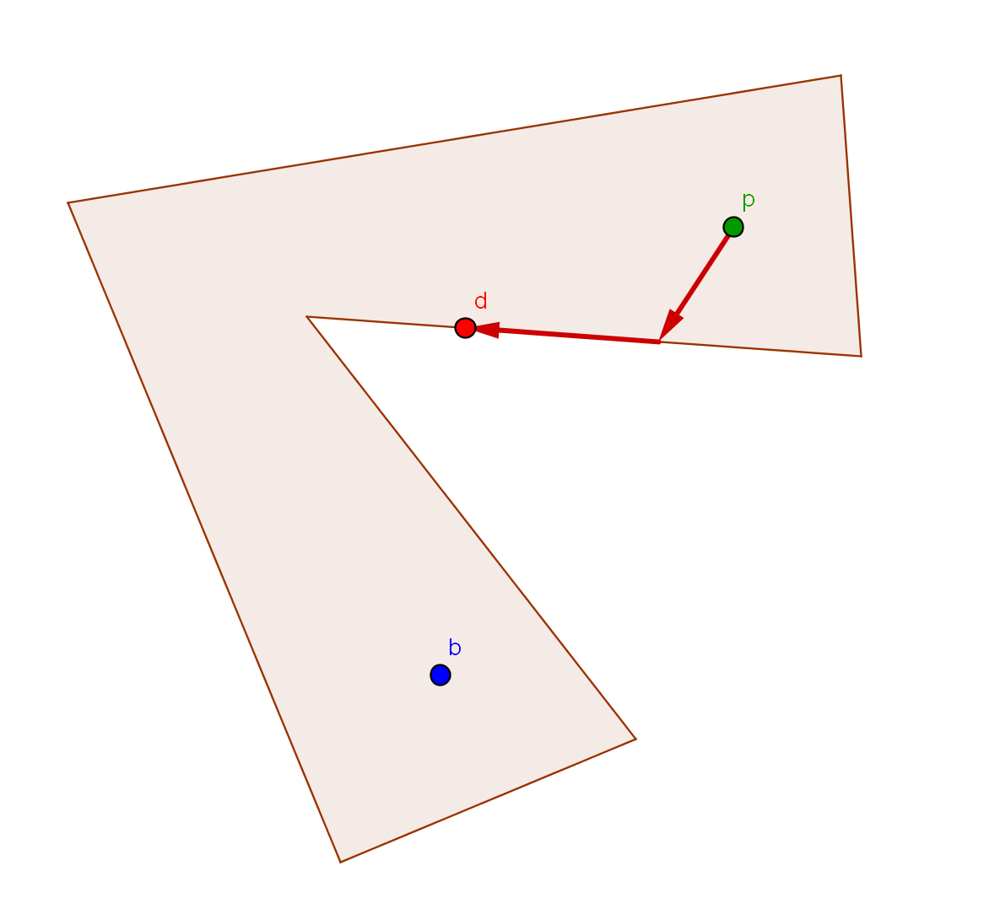
(c) is an edge dead point.
Figure 4 Types of dead points.
We can distinguish points belonging to as odd boundary points or even boundary points, depending on whether an object placed at them moves unconstrained or along under the influence of . Can we characterize even and odd boundary points in some other way? Yes, as the following proposition states. This characterization will be useful later.
Proposition 2.1.
Given a poligon , a point and a beacon , is an odd (even) boundary point with respect to if and only if the line segment crosses an odd (even) number of times.
Proof.
Let us consider the line segment . Let us assume it crosses times. We have that the crossings divide into segments. The first one lies of course entirely in , and the same holds for all odd numbered segments. Conversely, all even numbered segments lie outside . Now, if crosses an even number of times, counting as a crossing, the final segment before lies outside , thus an object at cannot move along because it is constrained by the edge(s) containing , making an even boundary point. On the other hand, if crosses an odd number of times, the last segment is inside , making an odd boundary point.
From the previous proposition we get the following Corollary.
Corollary 2.2. Given a dead point with respect to a beacon in a polygon , the line segment intersects an even number of times. ∎
Another useful Theorem (see [4] for its proof) bounds the number of dead points that can be found on an edge.
Theorem 2.3. Given an edge of , contains at most dead point.
We would like to obtain insights on how to easily define the boundaries of Attraction Regions, so we explore some of their properties, but also the properties of other related entities.
Let’s start by asking ourselves how many dead points are there, given a beacon . The following theorems give us tight bounds, distinguishing between polygons without or with holes.
Theorem 3.2. Given a simple polygon with vertices, we have .
Proof.
If is convex it has no dead points, so the lower bound can be easily observed. For the upper bound, consider a beacon . It can be easily seen that at least edges of are visible to , so any ray starting from that crosses these edges would cross them first. Thus we would have an odd number of crossings for each of these three edges, that consequently cannot contain dead points. Finally, an edge contains at most dead point, so the given upper bound holds. See Figure a↓ for an example. ∎
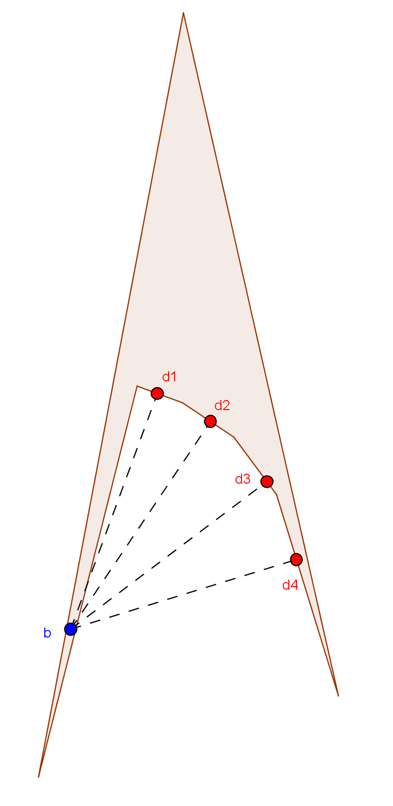
(a) has dead points.
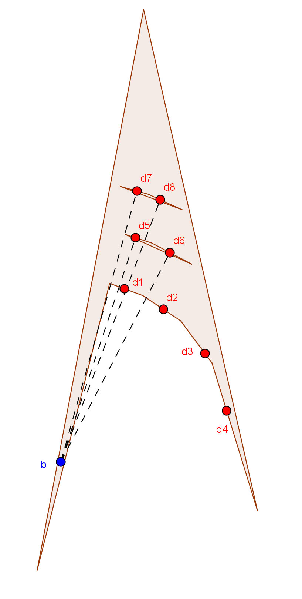
(b) has dead points.
Figure 6 Polygons showing that the upper bounds for dead points are reachable.
(Images adapted from [4])
Theorem 3.2. Given a polygon with vertices and holes, we have .
Proof.
This time we can observe the lower bound by taking a convex polygon with the holes being only triangles, oriented so that they don’t have any dead points. For the upper bound, first imagine to remove the holes from and consider the resulting simple polygon . If is the number of vertices of the th hole, then has vertices. so has at most . Now consider a hole , with vertices, and alone. At least one edge of is visible to , thus can have at most dead points on its boundary. The same holds for the other holes. By summing up the individual contributions, we get . If we combine this result with the one for the ploygon without holes we get dead points. See figure b↑ for an example. ∎
Thanks to these theorems, we can limit the number of dead points for a beacon , thus we can also limit the number of its dead regions. We take a step further towards our goal by stating that the dead regions of togheter with form a partition of .
Theorem 3.4. The dead regions of a beacon in a polygon , along with partition .
Proof.
First of all, an object starting at a point in will either reach or a dead point , thus fulfilling the requirement that the regions taken togheter yeld . It remains to show that these regions don’t overlap. In a situation as that of Figure a↓, our definitions are not enough precise to decide along which edge incident to a reflex vertex an object at will slide. The problem is eliminated by adopting the convention that objects at go always left. We have ensured that an object will follow a unique path under the influence of : is subdivided into disjoint regions. From what we said, each point is located in a region, so the proof is complete. ∎
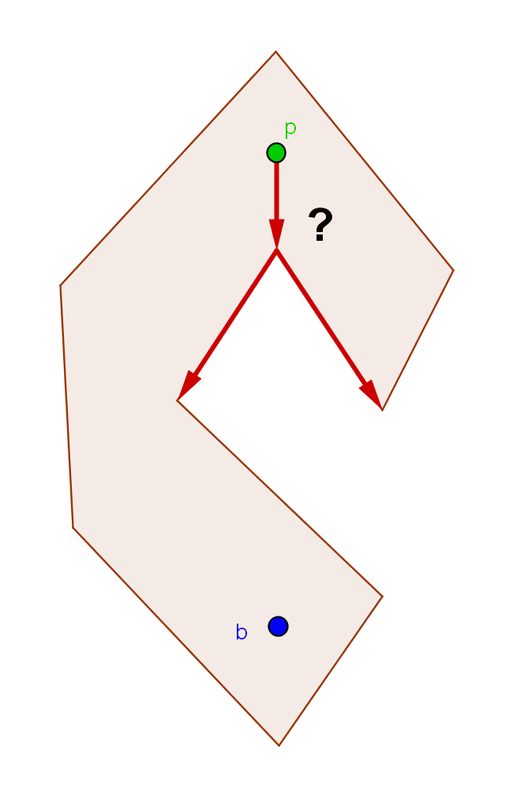
(a) We arbitrarily decide that goes always left.
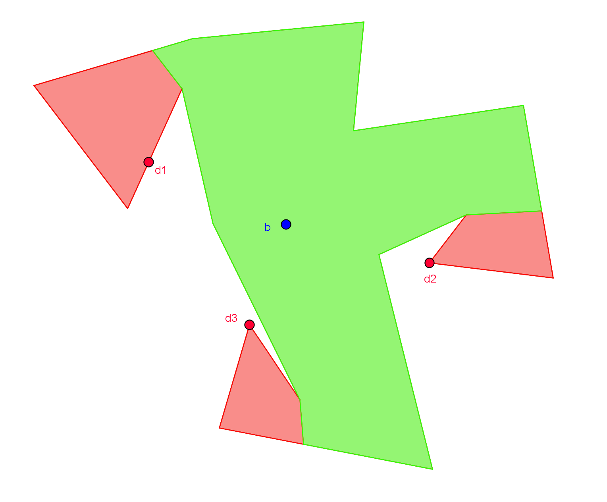
(b) An example partition, induced by .
The attraction region is in green, the dead
regions with their respective dead points are in red.
Figure 7 Visualization of the arguments of Theorem 3.2↑.
This result gives us an interesting hint, because it tells us that to identify we can try to determine the edges of the partition induced by . How to do this? It turns out that we need to use a particular kind of vertices in , called split vertices. We elaborate on them in the next Subsection.
We start by defining cut vertices, which are a particular case of reflex vertices.
Definition 3.5. Given a reflex vertex , we say that is a cut vertex if the ray with its origin translated to cuts the interior of starting immediately from .
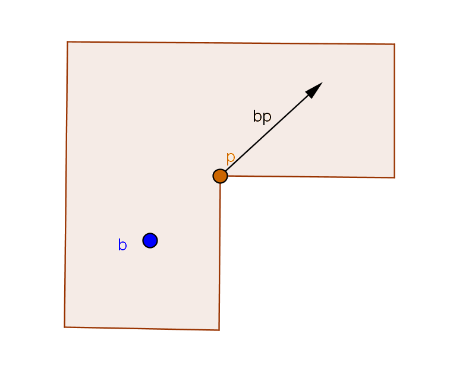
Figure 8 is a cut vertex.
How do we recognize a cut vertex? We can simply compute two cross products, as the next proposition precises.
Proposition 3.6. Given a reflex vertex , we say it is a cut vertex if:
1. and (Class I)
2. and (Class II)
3. and (Class III)
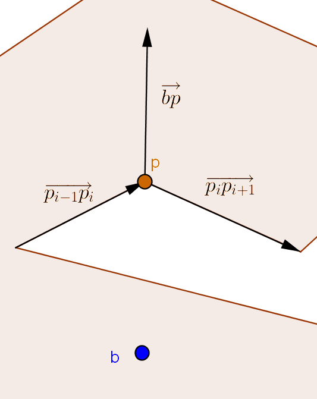
(a) is Class I cut vertex.
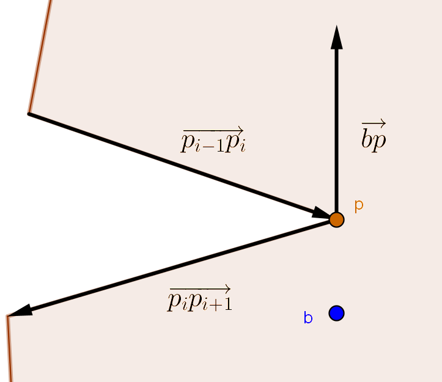
(b) is Class II cut vertex.
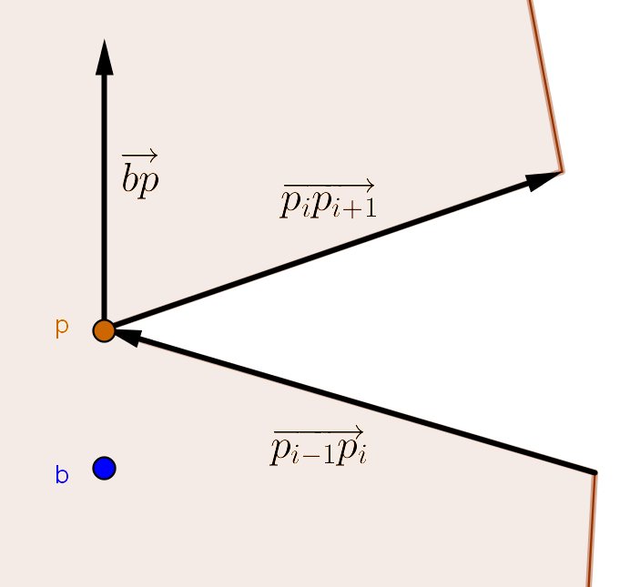
(c) is Class III cut vertex.
Figure 9 Types of cut vertices.
Now, a split vertex is just a particular case of cut vertex. We can identify it just by computing some additional dot products:
Proposition 3.7. Given a cut vertex , we say it is a split vertex if and only if:
1. It is a class I cut vertex and , b
2. It is a class II cut vertex and
3. It is a class III cut vertex and
(a) is a Class I cut vertex and a split vertex.
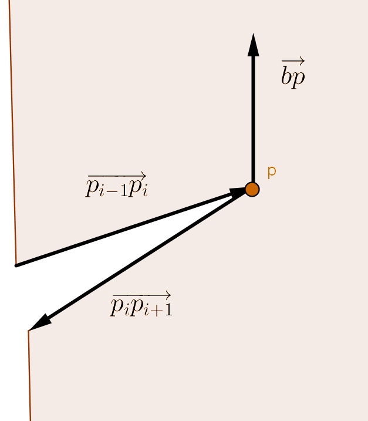
(b) is a Class II cut vertex and a split vertex.
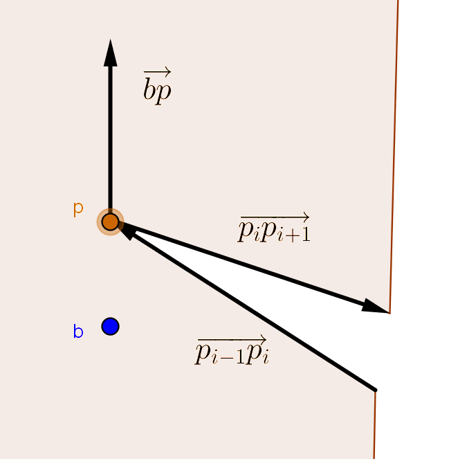
(c) is a Class III cut vertex and a split vertex.
Figure 10 Types of split vertices.
Given a beacon and a split vertex with respect to , we can identify the corresponding split edge by considering the first intersection of the ray starting at with , which we call the ray vertex. Split edges play a central role in the partition induced by a beacon: they are the boundary between two adjacent regions (although in polygons wih holes they might be entirely contained in a region).
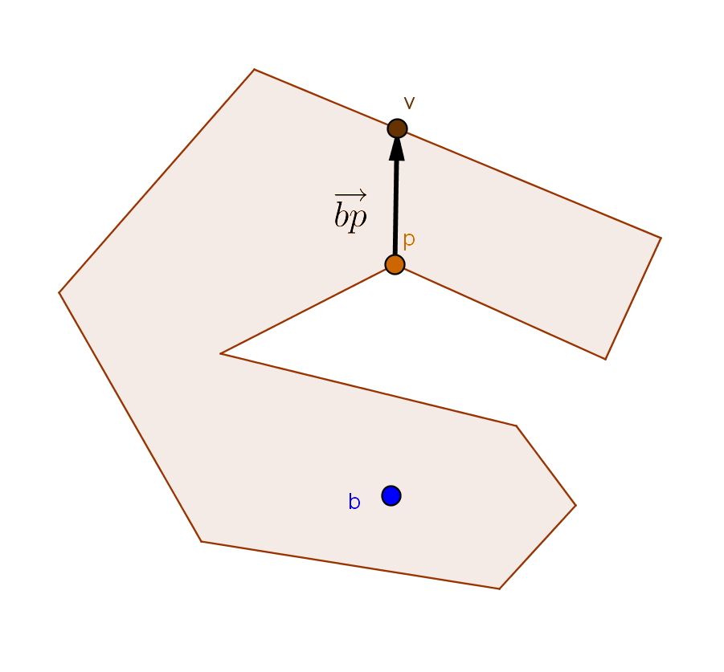
Figure 11 is the ray vertex correspoinding to . is a split edge.
Theorem 3.8. Given a simple polygon and one of its split edges with respect to a beacon ( is the ray vertex), represents the boundary between two dead regions or between and a dead region. This might not be the case for a polygon with holes, where might be entirely contained in the interior of or a dead region, but it can intersect at most one region.
Proof.
Consider first the case where is simple. Then represents a diagonal of . This polygon is divided into two parts, that we call and . We need to figure out how an object could possibly cross under the attracion of , and show that any possible case is infeasible. Objects placed on will eventually reach and slide left, because of our convention. What’s more, an object moving unconstrained under the influence of could never cross and switch between and , because is parallel to the ray . It remains to handle the case where the objects starts sliding along . But the crossing of cannot happen here, because of the following argument. is a split vertex; this means that objects sliding along the edges adjacent to move away from it, thus if they are on differents sides of , they are in different regions. is on the the boundary of at most two regions, because the points on a ray move unconstrained until they all meet at the same location, meaning that they will end up in the same point. Thus rays on different sides of are in different regions, that have as boundary.
If has holes, some points on different sides of could slide around a hole and end up in the same location, causing to be contained in a region. ∎
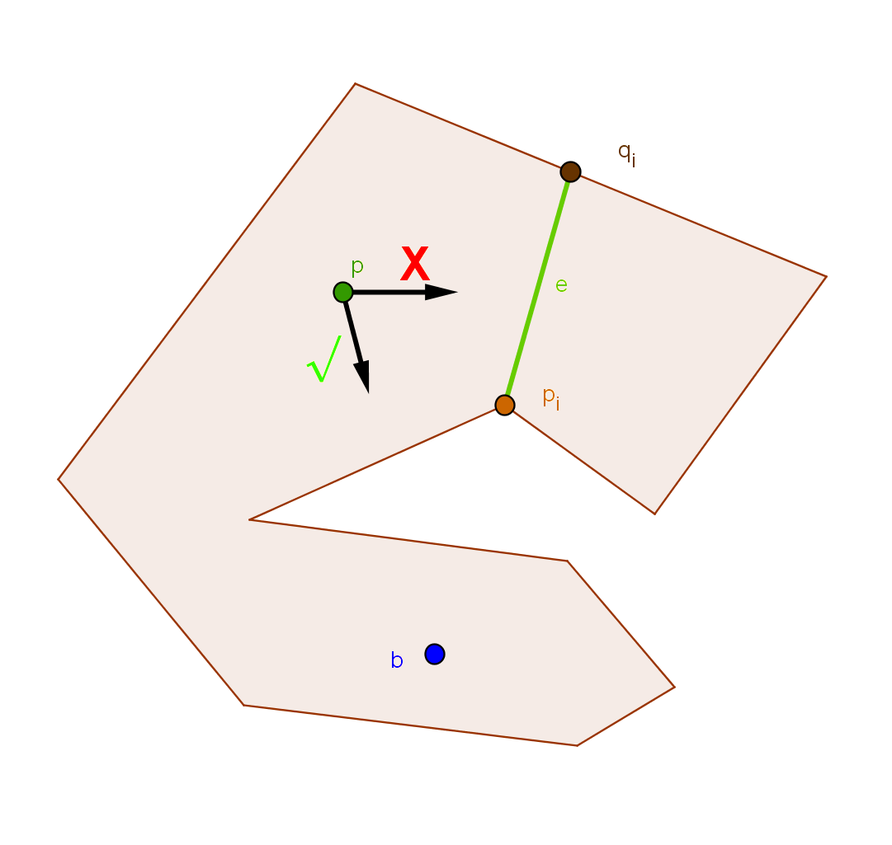
(a) An object starting at and moving unconstrained can never cross .
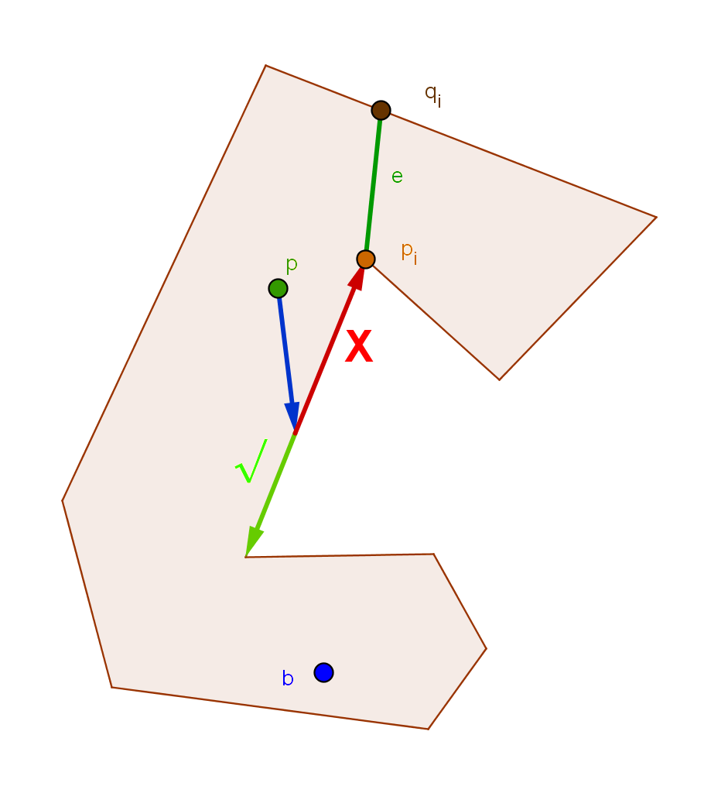
(b) An object starting at and reaching will always move away from .
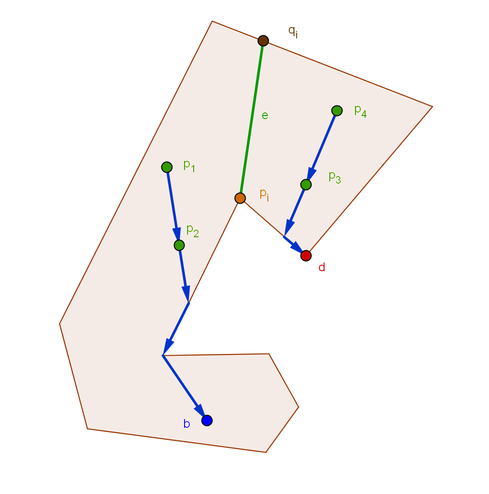
(c) Objects on the same ray cast from end in the same point.
Figure 12 Visualization of the arguments of Theorem 3.3↑
We are now close to a correct description of a partition induced by a beacon on a polygon . In addition to split edges, we need to say something about the edges of , and establish which kind of edges can form the partition.
Theorem 3.9. A boundary edge of a region in the partition of a simple polygon induced by a beacon can be either:
1. An edge of that has not been divided by a split edge
2. A split edge
3. An edge of the form , or , with and adjacent ray vertices lying on the edge .
Proof.
For simple polygons, let us start by noticing that all the edges are on the boundary of one or more regions, because all the points in belong to the partition. We have already talked about split edges. We can easily notice that the edges descibed at the third element of our list are components of an edge of , that have been split by one or more ray vertices, in such a way that they are on the boundary of only one region, while the original edge is on the boundary of a different region per different component. We are not done yet; we need to show that no other type of edge can be on the boundary of a region. Let us imagine that there exists a component on the boundary of a region that isn’t of any type mentioned so far. First, it cannot be that any part of isn’t parallel to a ray casted from the beacon that intesects , because otherwise objects on some points of the ray would move unconstrained until they would cross , thus sharing the region of the points on the other side of . We also have to take into account that would intersect at two points, that we may call and . Assume that is the closer to between the two. Where is ? It turns out that it must be a vertex of . Points on will reach . If was in the interior of an edge of , we would have crossings of : in case was a dead point, objects from either side would get stuck at , in case not, objects would slide along the edge containing , ending again at the same dead point. Now if we think about which of the elements of our list has the characteristics of (acting as a separator of the points on different sides), we see that it is exactly a split edge, with as the split vertex.
In a polygon with holes, it might happen that some split edges or components of divided edges are not on the boundary of a region. ∎
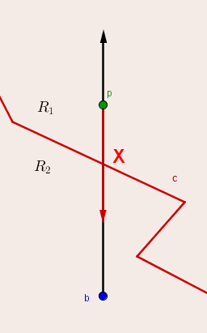
(a) If wasn’t entirely parallel to
a ray cast from that crosses it,
some points would cross .
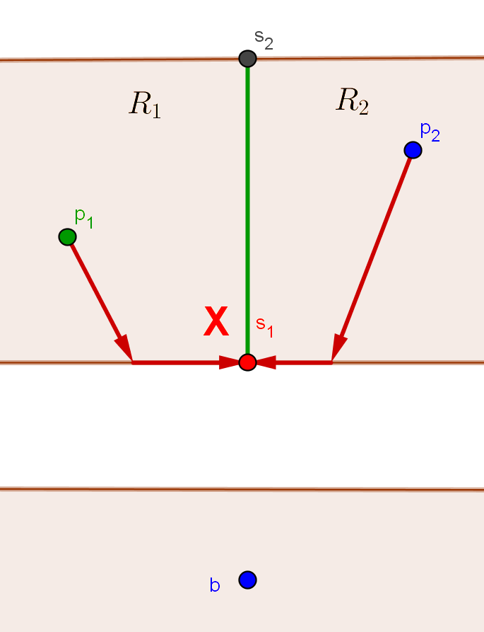
(b) cannot be an edge dead point,
because otherwise points on
different sides of would reach it.
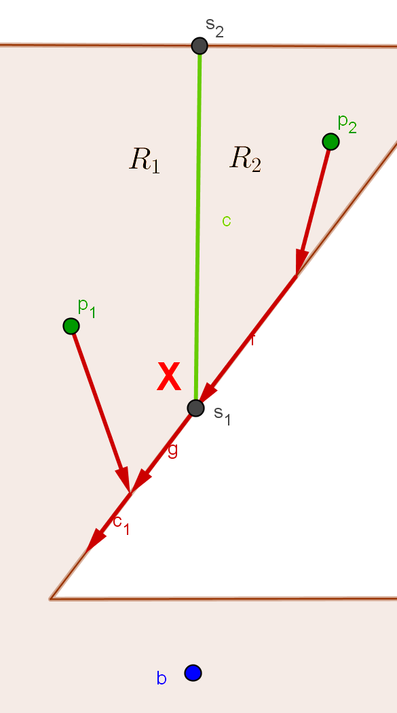
(c) cannot be on an edge in
general, because otherwise
some points would cross it and
go into the adjacent region.
Figure 13 Visualization of the arguments of Theorem 3.3↑
Now we can define a concrete strategy for obtaining the attraction region algorithmically! Given a polygon and a beacon , first we need to find the split vertices of with respect to , then compute the corresponding ray vertices to obtain the split edges and the components of the divided edges of . In case of a polygon with holes this is not enough; we also need to discard the edges that we meet twice when walking along the boundaries of the regions. By doing this we will obtain a set of regions, namely the dead regions, each containing a different dead point, and the attraction region.
There are a few more properties of the attraction region of a beacon that are worth mentioning; we give them in the next Subsection.
In this subsection we review the existing algorithms for computing the attraction region of a beacon in a polygon . There are four algorithms in total. We will describe in detail only the first one, which is the one that was implented. In the complexity analyses, refers to the number of vertices of a polygon.
This algorithm exploits the idea that we mentioned in Subsection 3.3↑. It employs a rotational sweep technique. First it sorts the vertices of a polygon radially about a beacon , then it examines the sorted list to find split vertices, maintining a status of the edges intersecting the sweep line in order of increasing distance from the beacon. Once a split vertex is found, it determines the corresponding ray vertex. In the end it will yeld the partition induced by the beacon. For a polygon with holes, we have to be careful excluding edges contained in a region, as we mentioned in Subsection 3.3↑. We now give the pseudocode of the algorithm.
1procedure AttractionRegion(P, b)
2 Sort the vertices by angle about b, and keep in an ordered event list L=(p1, p2, ..., pn)
3 Find the order of intersection of edges from p1 along the ray bp1 and store as status S
4 for the next vertex pi in L do
5 Update S as necessary
6 if pi is a split vertex with respect to b then
7 Find qi, the ray-vertex of pi with respect to b
8 Add qi to the arrangement of P
9 Add edge (pi, qi) to the arrangement of P
10 end if
11 end for
12 return the arrangement of P
13end procedure
Algorithm 1 running-time algorithm in simple polygons (taken from [4])
Complexity analysis
The algorithm requires a comparison-based sorting algorithm in order to obtain the ordered list of points. Since a comparisons can be done in constant time using turns, the sorting part takes as usual. Maintining a sweep line status also costs . Determining if a vertex is a split vertex takes constant time (we saw how to do this in Subsection 3.3↑). Finding the ray vertex also takes constant time, because we can exploit the sweep line status to find the edge on which it lies.
In polygons with holes, the time spent walking on regions’ boundaries is linear, so it is dominated, for instance, by the sorting algorithm.
The space complexity is , because we can only find split edges and, consequently, components of divided edges.
Implementation
In our implementation, we used a modified version of the quicksort algorithm in order to obtain the ordered event list, and we used a red-black binary search tree to maintain the sweep line status. An input polygon is stored and updated during the algorithm by using a doubly connected edge list. Adding a split edge and splitting the edge on which its ray vertex lies is achieved by a split-edge operation using the ray vertex, followed by a split-face that adds the split edge. It is worth mentioning that Algorithm 1↑ contains a little error. At line , we are asked to find the edges that intersect the ray with its origin translated at , but in this way we might miss some edges that we would need to take into account when processing a split vertex coming after and that we wouldn’t be able to meet as the sweep line advances from to . See Figure 14↓ for an example. This error caused crashes in the implementation and it can be solved by including in the status the edges intersecting with its origin at .
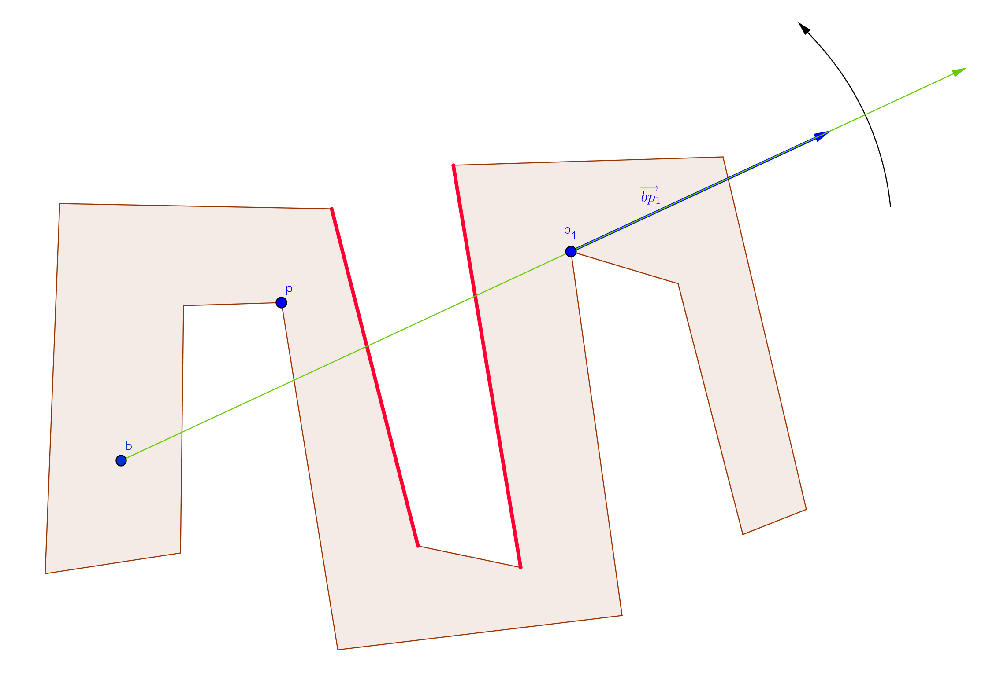
Figure 14 The sweep line (shown in green) rotates counterclockwise.
The missed edges are shown in red.
The second algorithm is similar to the first one, but in order to compute split edges it uses the geodesic triangulation data structure described in [1], which we don’t treat here beacuse it is not directly related to the topic. Basically this data structure allows performing ray shooting queries efficiently, after some initial preprocessing, thus avoiding sorting and maintaining a sweepline status, in order to find ray vertices.
Complexity analysis
Preprocessing the polygon for the geodesic triangulation takes , although it might be completed in linear time by using the fastest triangulation algorigthm known (see [5]). A ray shooting query takes for a split vertex and since we might have of them, we get a running time of .
In polygons with holes, the preprocessing time becomes , while the query time is ([1]). Thus, getting the raw arrangement takes , and it dominates the postprocessing time to eliminate false positives, which is linear as we explained before.
Space complexity is again .
The third algorithm is more involved. It starts by computing a triangulation of the input polygon, form which it obtains its dual graph, later transformed in a directed tree, which it uses to select only the edges on the boundary of the attraction region, that are obtained by discarding the split edges that are “outside” other split edges (the path from the beacon to them crosses other split edges). For each triangle we record the split edges that propagate through it. A split edge that is found to be on the boundary of the attraction region is propagated iteratively through the triangles containing it, which will eventually lead to finding the ray vertex. The attraction region is simply the region containing the beacon.
In polygons with holes we do the same as for the previous algorithms, but only for the attraction region. We don’t need to compute a triangulation that considers the holes of the polygon.
Complexity Analysis
The initial triangulation can be computed in time, thanks to the algorithm described in [5]. Its dual, from which we obtain the directed tree and a list of interesting triangles can be obtained in linear time by performing a search from the triangle containing the beacon. Each triangle is considered once, and for each triangle we propagate at most two split edges (as the attraction reagon in a simple polygon is simple and all edges outside it are suddenly discarded), so we have a final running time equal to .
For polygons with holes, the difference is that we would need to propagate edges for each triangle, because of the holes, which might contribute with two split edges each, possibly propagated through many triangles. Thus the complexity becomes .
The triangulation , its dual, and the remaining data structures are all linear, so we get a space complexity of .
The last algorithm employs a radial trapezoidization ([7]). First it finds the visibility polygon of a beacon from the triangulation of the polygon, then it considers the remaining regions, for which it computes horizontal trapezoidizations in a projective space that brings the beacon to infinity. Reversing the projection yelds the radial trapezoidization of these regions. For each split vertex, use the trapezoidizations to find the ray vertex.
Complexity Analysis
The radial trapezoidization can be computed in time and the split edges can be found in time too. Thus, the algorithm takes time in total. In polygons with holes the complexity is dominated by the triangulation, that here considers also the holes and it’s computed in . Space complexity is linear as usual.
Definition 4.1. Given a polygon and a point , the inverse attraction region is the set of points in to which is attracted (see Figure 15↓ for an example).
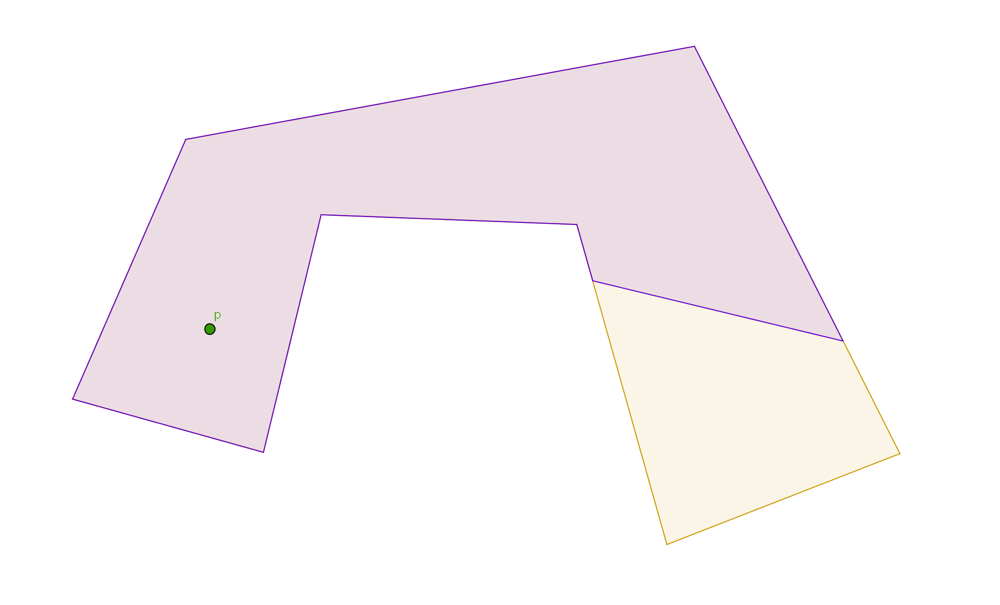
Figure 15 is shown in purple.
Definition 4.2. Given a polygon and a subset of , the inverse attraction region of , , is the set of points in that attract at least one point in .
4.2 Algorithm for the Inverse Attraction Region of a Point
According to [3, 4], in order to obtain the inverse attraction region of a point , we can consider a line arrangement induced by a polygon and , which we call , constructed by taking the following sets of lines:
the lines defined by the edges of ;
for each reflex vertex, those lines intersecting it that are perpendicular to its incident edges;
lines through and each reflex vertex.
The authors of [3, 4] claim some interesting properties for this arrangement that give ideas for an algorithm.
Lemma 4.3.
Given two points and contained in a face of , and given a vertex of , if is a split vertex for when we consider it as a beacon, then it is also a split vertex for .
This interesting fact can be used to prove a even stronger result:
Theorem 4.4. Given two points and contained in a face of , and given a point of , if , then too.
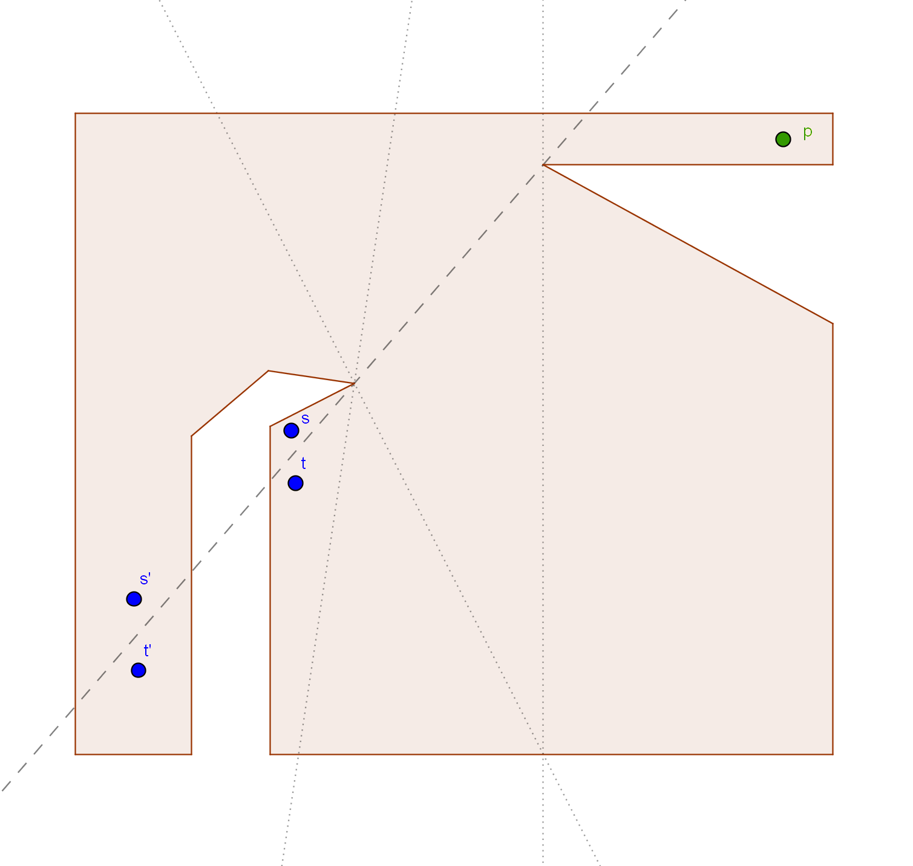
Figure 16 and belong to the same face in but, while cannot attract , can. Also and are in the same face, but attracts and
dg does not. (Image redrawn from [2])
This is a great simplification, because it’s telling us that we can just test a single point in a face of the considered arrangement. Unfortunately the arrangement doesn’t identify correctly the regions attracting , as discovered by the authors of [2] (see Figure 16↑ for an example). There it is noted that we need to slightly modify the line arrangement, by considering these sets of lines:
line through the segments of the Shortest Path Tree of a point ();
for each reflex vertex, those lines intersecting it that are perpendicular to its incident edges;
lines through the edges of .
With this arrangement the algorithm works properly (see [2] for details). Note that the lines through include the sets of lines at the first and third position in the list for the original arrangement, and that the last set of lines is there to discriminate the points that are inside . The authors of [2] claim the following about the new .
Lemma 4.5. Given two points and and a point , if and are in the same region of , they either both attract or not.
We now give the pseudocode of the algorithm.
1procedure InverseAttractionRegion(P, p)
2 Initialize Ap = ∅
3 Compute SPT(p)
4 for each edge e in SPT(p)
5 Add line e to Ap
6 end for
7 for each reflex vertex r in P do
8 Add line rp to Ap
9 Add the lines r1 and r2 through r and perpendicular
10 to the edges incident on r to Ap
11 end for
12 for each edge e in P do
13 Add line e to Ap
14 end for
15 Remove duplicate lines in Ap
16 Initialize IA(p) = ∅
17 for each face F of Ap do
18 Choose an arbitrary point bF of F and compute A(bF)
19 if p ∈ A(bF ) then
20 Add F to IA(p)
21 end if
22 end for
23 return IA(p), the inverse attraction region of p
24end procedure
Algorithm 2 running-time algorithm for (adapted from [4])
Complexity Analysis
This algorithm uses an attraction region algorithm (/) and it tests, for each attraction region computed, if the given point is in it (). The shortest path tree can be computed in linear time (see [6]). There are faces in the arrangement, but walking through them in a breadth-first fashion using the dual graph allows updating the attraction regions quickly, making the overall complexity .
The space complexity is .
Implementation
The algorithm was implemented straightforwardly, without any optimization. Thus, it might be a bit slow in some cases (the user needs to wait a second or two to see the result) due to the fact that the faces of the arrangement tend to explode. For quite complex polygons the algorithm might get stuck. The algorithm for the attraction region that was developed earlier has been used here.
4.3 Algorithm for the Inverse Attraction Region of a Region
To compute the attraction region of a region, it is convenient to consider a modified version of the line arrangement described above. We call the new arrangement and we obtain it by considering the lines from each reflex vertex of the input regions through each reflex vertex of the input polygon, thus modifying the set of lines at position 3 of the original arrangement for the attraction region of a point. This arrangement has a property that is similar to that of with respect to attracting points in a region.
Theorem 4.6. Given two points and contained in a face of , if , then .
Thanks to this fact we can easily determine te attraction region of , by using a point for each face of the arrangement. Since the arrangement for the attraction region of a point was incorrect, it might be that this arrangement is incorrect too, but we didn’t investigate on this.
All the terminology and mathematical statements in this Section are taken from [3] and [4].
Now that we have seen how to compute the attraction region and the inverse attraction region, we would like to use them in order to perform beacon-based routing. We would also like to find the minimum routing paths each time. In this section we consider first the case where we are given a set of candidate beacons, then the case where we have no beacons except the destination, which we solve with a nearly optimal approximation algorithm.
This algorithm’s main task consists in building a directed graph, that has the candidate beacons, the starting point and the destination as nodes, and edges of the type if . Once the graph is computed, the routing path is simply a shortest path between the starting point and the destination. We now give the pseudocode of the algorithm.
1procedure Minimum Beacon Path with Candidates(P,M, s, t)
2 Compute a triangulation T of P
3 C = M ∪ s ∪ t
4 Initialize directed graph G = (C, ∅)
5 for each c ∈ C do
6 Compute A(c)
7 for each triangle t ∈ T do
8 Record the subset of t that is attractable to c
9 for each d ∈ M ∩ t do
10 if d ∈ A(c) then
11 Add directed edge dc to G
12 end if
13 end for
14 end for
15 end for
16 Find a shortest path p from s to t in G
17 return the sequence of beacons in p
18end procedure
Algorithm 3 running-time algorithm in
simple polygons (taken from [4])
Complexity Analysis
In a simple polygon, the main contribution to the time complexity is given by the for loop. There are point in , and for each of them we spend time computing its attraction region and time to determine the edges o include in , yelding a total running time of . In a polygon with holes, the triangulation now takes time. As before we spend for each attraction region, but to identify the candidate beacons in the triangles. Thus the total running time is . The space complexity is dominated by the attraction regions and it’s .
Implementation
When it came to implementing the algorithm, it didn’t seem necessary to compute a triangulation and to examine each of the resulting triangles. Indeed, simply checking each ordered pair of beacons is enough, and it doesn’t increase the time complexity. The shortest path is found by using Dijkstra’s shortest path algorithm.
This algorithm starts from a triangulation of a given polygon, then it builds a directed graph in the following way: the nodes are the triangles in the triangulation, and if a triangle intersect the inverse attraction region of another triangle , add the directed edge to the graph (see [4] for the computation of the inverse attraction region of a region). To find a sequence of beacons routing to , find a shortest path between the triangles containing the two points using the graph, and finally take a beacon for each triangle, using the information on the inverse attraction regions. The pseudocode of this algorithm follows.
1procedure Approximate Minimum Beacon Path(P, s, t)
2 Compute a triangulation T of P
3 Initialize directed graph G = (T , ∅)
4 for each triangle a ∈ T do
5 Compute IA(a)
6 for each triangle b ∈ T do
7 if b ∩ IA(a) ≠ ∅ then
8 Add directed edge → ba to G
9 end if
10 end for
11 end for
12 Find a shortest path p from s to t in G
13 for each triangle a on the shortest path starting from t do
14 Find the corresponding ‘attracting’ point and ‘attracted’ point
15 Link the points together along the shortest path
16 end for
17 return the sequence of beacons
18end procedure
Algorithm 4 running-time algorithm (taken from [4])
Complexity Analysis
The running time is determined by the computations of the inverse attraction regions of the triangles. As explained in [4], this takes time. Since we do this for each triangle, the total running time is .
We can compare the length of the path obtained with this algorithm with thathof the minimum one thanks to the following lemma.
Lemma 5.1. The shortest path from the triangle containing to that containing in the graph described above is at most that of a minimum beacon path from to .
Since the beacon path obtained by the algorithm uses two beacons for each triangle, we have an amount of beacons that is at most two times the necessary beacons. If we iteratively compute the inverse attraction region for each triangle ( ), we obtain a beacon path that has at most beacons every beacons in the optimal path. This gives us a polynomial-time approximation of the minimum beacon path (see [3, 4]).
An applet was developed to illustrate interactively the main concepts of this page. It can be reached by clicking on the button below. Instructions are included in the destination page.
[1] B. Chazelle, H. Edelsbrunner, M. Grigni, L. Guibas, J. Hershberger, M. Sharir, J. Snoeyink. Ray shooting in polygons using geodesic triangulations. Algorithmica, 12(1):54—68, 1994.
[2] Bahram Kouhestani, David Rappaport, Kai Salomaa. On the Inverse Beacon Attraction Region of a Point. CCCG, 2015.
[3] Michael Biro, Justin Iwerks, Irina Kostitsyna, Joseph S. B. Mitchell. Algorithms and Data Structures: 13th International Symposium, WADS 2013, London, ON, Canada, August 12-14, 2013. Proceedings. Springer Berlin Heidelberg, 2013. URL http://dx.doi.org/10.1007/978-3-642-40104-6_14.
[4] Michael Biro. Beacon-based routing and guarding. 2013.
[5] Bernard Chazelle. Triangulating a Simple Polygon in Linear Time. Discrete Comput. Geom., 6(5):485—524, 1991. URL http://dx.doi.org/10.1007/BF02574703.
[6] L Guibas, J Hershberger, D Leven, M Sharir, R Tarjan. Linear Time Algorithms for Visibility and Shortest Path Problems Inside Simple Polygons. Proceedings of the Second Annual Symposium on Computational Geometry:1—13, 1986. URL http://doi.acm.org/10.1145/10515.10516.
[7] N. Mouawad. Minimal obscuring sets: the parallel view case. Proc. 2nd Canad. Conf. Comput. Geom.:232—235, 1990.
Instructions
Welcome to the awesome Can you Route it? !!!
Are you ready to solve all the levels and not get stuck in the journey? Let’s see!
How can you play?
After selecting a level, you will see the polygon and the points you have to route between (origin in red and destination in green).
You will also see a combination of beacons, in dark color, proposed to route between the origin and the destination. But these beacons have been chosen by a >malicious algorithm, which is a bit silly. Can you reduce the number of beacons in the path?
Can you do better?
If you press Start, you will start the level. Then you can introduce the beacons, in order, of your path. They will be shown in blue. Try to use as less as possible!
Once you have finished your path, press Ready. First, you will see your path, beacon by beacon with their attraction regions. Then you will receive your score!
You lose! Not routed!
In case the path you have introduced is not even a path!
You lose! Excess!
You have introduced too many beacons!
Good!
Well done, you have beaten the evil algorithm! But not by far…
Very Good!
Congratulations! You have managed to do it great! You are top at this…
Excellent!
No words. You have done it even better than the designers, Einstein.
If you press Hint, then you can select a beacon and see its attraction region for 5 seconds. But be careful, you’ll have a limited amount of hints!
Levels
You will start an incredible journey of 4 levels of difficulty!
Easy:
You have introduced too many beacons!
Medium:
Well done, you have beaten the evil algorithm! But not by far…
Hard:
Congratulations! You have managed to do it great! You are top at this…
Implossible maze:
No words. You have done it even better than the designers, Einstein.
Once you have succeeded in a level, you will unlock the next one! Then you can move between the unlocked levels by using PREV and NEXT.
Are you prepared to complete this odyssey?
Other Information
You can turn on and off the music by clicking on the Sound button.
Press Back to exit the game and return to this page.
In this project, David focused more on coverage, while Andrea worked on routing. David treated routing too, but we addressed the topic using complementary approaches.
The videogame is the result of team work. David designed the polygons for the levels, provided the default beacons and the lower bounds on beacons for each level. Andrea took care of the programming part.
Credits
Thanks to Stefan Langerman, our Computational Geometry teacher from Algorithms Research Group in the Université Libre de Bruxelles, for his helpful advises throughout the conception and implementation of this project. Additional thanks to him from Andrea, for outlining the Shortest Path Tree algorithm.
Thanks also to Irina Kostitsyna, for answering so quickly to our doubts and confirm our thoughts.